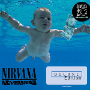
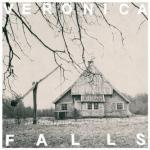
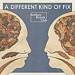

Music Reviews
-
Twin Sister In Heaven
Twin Sister find themselves part of the dream pop revival that briefly went through that bizarre chillwave moment — but while the band found themselves lumped into the trend, there's too much here for that shallow moniker.
Matt Montgomery reviews... -
Tori Amos Night of Hunters
In which the purveyor of sophisticated, piano-based, radio-friendly angst (and nonsensical lyrics about breakfast cereals) from the mid-90s attempts to create a proper full-on classical album.
Mark Davison really hopes that she's not trying to do a Sting... -
Das Racist Relax
After a couple of brilliant mixtapes, difficult-to-define comedy rappers Das Racist finally deliver a full-length.
Stephen Wragg. A million dollars. You feel me?!?! -

Nirvana Nevermind (Reissue)
The stellar Nevermind reissue shocks back to life something that was never dead.
Luredo Marbery remembers while listening to... -

Big Troubles Romantic Comedy
Enlisting power pop admiral Mitch Easter, the New Jersey foursome follow up their quaggy debut with a cleaner production and a strong emphasis on jangle pop's formative years.
Juan Edgardo Rodríguez reviews... -

Matthew Sweet Modern Art
The power pop virtuoso's latest is a return to form, more balanced in the mix of songcraft, experimentation, and musicianship.
Angel Aguilar reviews... -

Veronica Falls Veronica Falls
Veronica Falls look to be one of those few bands cutting through the noisy indie pop landscape with some noise of their own.
Matt Montgomery reviews... -

Jens Lekman An Argument With Myself EP
The Swedish indie-pop storyteller's five song EP tones down his self-referential rhetoric and enlivens the lives of others, all while offering a smattering of new and old sounds.
Juan Edgardo Rodríguez would like to drive to Wine Country... -
Wild Flag Wild Flag
With a stupendous array of indie-rock pedigree, this album is exactly what you should have expected it to be. Thank God.
Joe Iliff reviews... -

Bombay Bicycle Club A Different Kind of Fix
The British indie quartet return with their third album, A Different Kind of Fix. Another churned out, half-chewed mixed bag of an album, or something more? It hasn't always been like this...
Craig Stevens has had his Fix...